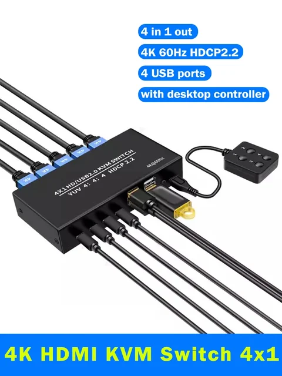
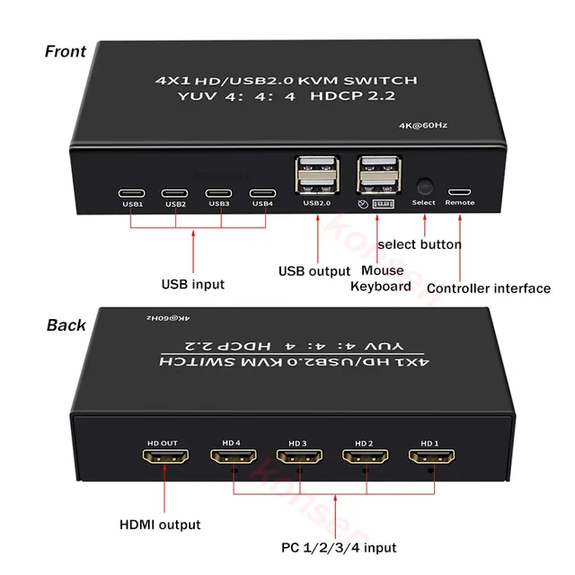
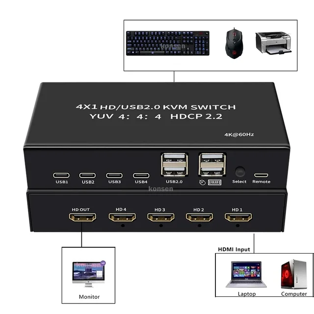
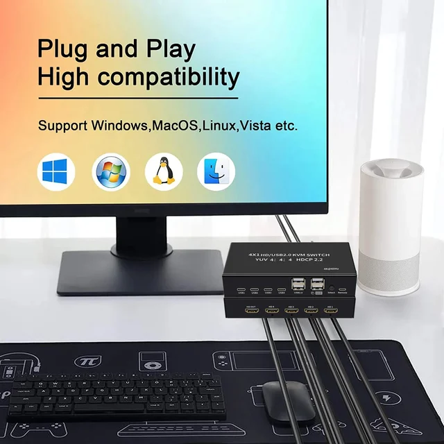
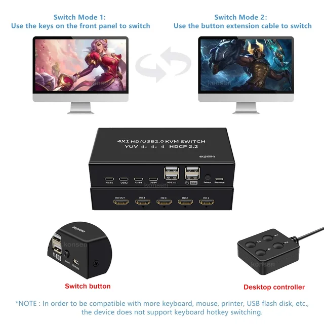
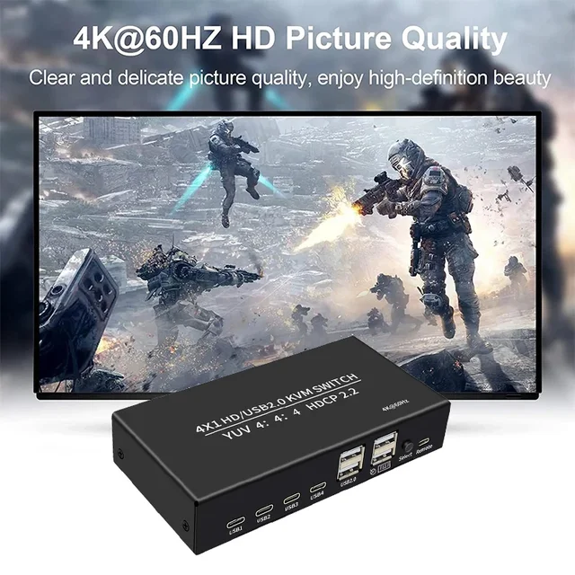
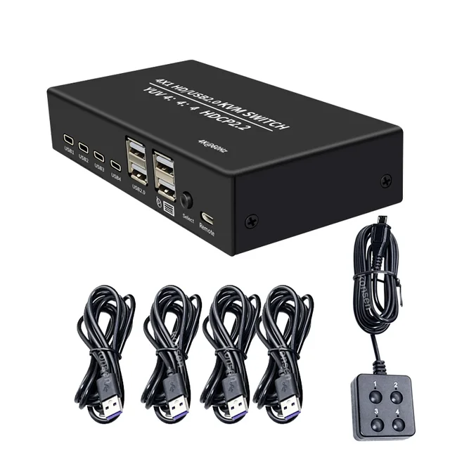

About This Product:
This 4-Port 4K HDMI KVM Switch - One set of keyboard and mouse control 4 hosts Laptop or game console. Help you save the desktop space and equipment spending. No more hassle to swing your chairs at work, increasing the productivity. (4HDMI Input to 1 HDMI Monitor, projector or HDTV)
1. 4 Port-- Used to share 4 USB or for HDMI-compatible peripheral devices(like scanner, USB hard drive or other USB devices) without having to constantly change cables. (Using only 1 set of keyboard, mouse and monitor to control 4 PCs)
2. Mouse Keyboard Sharing-- Using only 1 set of keyboard, mouse and monitor to control hosts Laptop.
3. Material--The shell made of aluminum alloy material, anti-oxidation, heat-resistant, it expands the life of the USB switch.
4. Easy to operate--Plug-and-Play design will be easier to use, no app is needed.
5. Others--Compact design reduces office expenses and saves a lot of space.
Remarks:
1)standard 104-key wired USB keyboard, standard 2 or 3 button wired USB mouse are recommended.
2)Hot-key control on keyboard is not supported.
Description:
Four hosts share a set of display / keyboard and mouse to improve work efficiency.
4K@60HZ clear picture quality. Support 4Kx2K high-definition resolution clear and detailed display.
Easy switching, neat desktop. High-speed transmission without lag, no loss of picture and sound quality.
USB transmission technology mouse and keyboard without delay.
Metal shell, wear-resistant, high temperature resistant, good heat dissipation.
Packing list:
1 x HDMI KVM Switch
1 x Desktop Controller
4 x USB cable
1 x User manual






